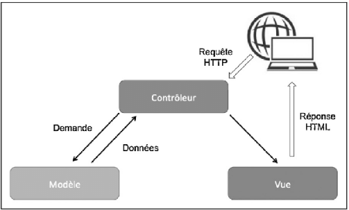
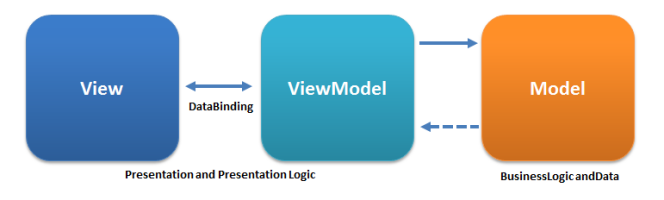

Nous avons déjà pu aborder le modèle MVC quand nous avons parlé de Symfony et du PHP.
MVC, pour Model View Controller, représente une architecture de code visant à séparer les responsabilités de l'application web en trois entités distinctes : le Model qui gère l'accès et le format des données, la View qui gère l'affichage à l'écran et la partie interface, et le Controller qui est en charge de la logique métier et qui fait office de passe-plat entre le Model et la View.
Pour faciliter la compréhension et pour caricaturer un peu, imaginons le MVC comme une entreprise. Au sein de celle-ci, on retrouve une hiérarchie bien en place.
Modèle (Model) : On le voit comme l’administrateur. Il va gérer les communications avec une source de données comme les bases de données.
Vue (View) : Au niveau de l’entreprise, on va le voir comme le service marketing. Il va gérer la présentation de notre site.
Contrôleur (Controller) :
On va considérer le Contrôleur comme le CEO de l’entreprise. Il va donner les directives en général. Au niveau du code, si on appelle une route, on va alors solliciter le Contrôleur qui gère la route en question.
Pour une route /login, on va par exemple appeler le LoginController qui va donner les directives à la Vue pour afficher la page de connexion. Lorsqu'on va essayer de se connecter, c'est toujours le LoginController qui va donner les directives, mais cette fois-ci, il va donner les directives à notre Modèle qui lui, communique avec la base de données.
Le Controller va effectuer une requête POST avec les identifiants et demander au Modèle de vérifier si les identifiants en question existent bel et bien en Base De Données (BDD) .
Si le Modèle ne trouve pas les identifiants en BDD, le Controller va demander cette fois-ci à la Vue d'afficher un message d'erreur par exemple.
Si au contraire, les identifiants existent dans la base de données, le Modèle va retourner au Controller qu'il a bien trouvé les données et le Controller va cette fois-ci demander à la Vue d'afficher par exemple le panel d'administration.
Les librairies JavaScript front-end modernes, comme React ou Vue.js, sont basés sur le modèle MVVM, pour Model View ViewModel.
On retrouve deux composants communs avec le modèle MVC. Le Model est, là encore, en charge de la gestion des données et des formats de données. Le Model est également responsable de porter la logique métier qui serait gérée par le front-end. La couche View est quant à elle responsable de gérer l'affichage et les styles.
Le pattern MVVM :
Le binding est un mécanisme qui permet de faire des liaisons entre des données de manière dynamiques. Ce qui veut dire que si A et B sont lié, le fait de modifier A va être répercuté sur B et inversement.
Ce pattern (MVVM) a spécialement été conçu pour améliorer la séparation entre les données et la vue qui les affichent. Le lien entre la vue et le modèle de données est fait par des mécanismes de binding.
Qu'est-ce que le Virtual DOM ? Le DOM est une API navigateur qui peut être très lente pour un gros volume de nœuds de DOM ou un gros volume de modifications à apporter. Il faut imaginer les éléments de DOM de la page comme un arbre et en fonction de l'opération qu'on effectue : par exemple, si on supprime un élément de DOM, nous aurons besoin de scanner tous les éléments enfants de notre élément cible dans l'arbre de DOM, ce qui peut être assez long.
La solution trouvée par les frameworks comme React, c'est le Virtual DOM. C'est une copie de l'ensemble de l'arbre de DOM réalisé en JavaScript. Le traitement de données en JS est beaucoup plus rapide : quand une ou plusieurs modifications de données viennent impacter le DOM, React va rassembler ces modifications dans un batch et les appliquer sur le Virtual DOM. Une fois que tous les traitements du batch sont effectués, React va comparer le Virtual DOM au véritable DOM de la page, et va reproduire les modifications sur le DOM en faisant le moins d'opérations possibles.
Cet usage maîtrisé de l'API DOM permet à ce type de framework d'être très performant pour traiter un grand nombre de nœuds de DOM.
Contrairement au modèle MVC, que ce soit en utilisant React ou Vue.js, les différentes couches ne vont pas se matérialiser sous la forme de différents fichiers. React est un framework organisé en composants. On verra plus en détails ce qu'est un composant plus tard, mais les trois couches, Model View et ViewModel vont le plus souvent se retrouver toutes les trois liées au cœur d'un même fichier de composant. Il est tout de même important de comprendre la différence entre ces trois couches pour appréhender au mieux le fonctionnement interne d'un framework comme React.
Le modèle MVC (Model View Controller) est utilisé principalement sur les framework back-end pour séparer les responsabilités d'une application en trois type de fichiers. Les librairies JavaScript modernes tels que React ou Vue.js reposent sur un autre modèle, le modèle MVVM (Model View ViewModel). Les composantes Model et View ont a peu près le même rôle que dans le modèle MVC, mais la couche ViewModel est propre à ce type de librairies et sert de couche de binding entre les données et le DOM. Dans le cas de React, le DOM n'est pas manipulé directement, on passe par l'intermédiaire d'un VirtualDOM qui servira à synchroniser les mutations sur le DOM de la manière la plus rapide et performante possible.